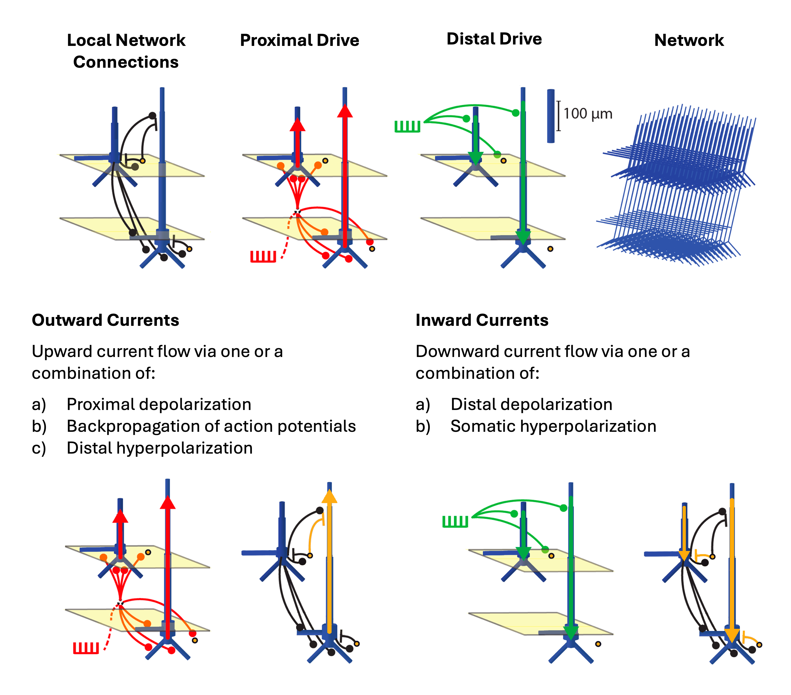

Workshop Instructions
Table of Contents
Please consider ‘signing in’ to the workshop by providing your institution/location, position, and field of study. This information is used in reporting on milestones for the grants that continue to fund our dissemination and development. We don’t ask for name or email, and the form should take no more than 30 seconds to complete.
Click here to navigate to our Virtual Sign-In Form.
Thanks for your support. 😁
This section of the workshop will require you to use HNN-Core GUI.
We have created a Google CoLab notebook that allows you to run the HNN-Core GUI out of your browser, with access to your local filesystem.
This is the quickest way to get up and running with HNN-Core GUI, though it does require a Google Account. If you do not have a Google account, you can either create one for free to run the notebook, or try one of the other installation methods listed below.
Click here to open the CoLab notebook, which includes instructions on how to get started.
To follow along with the workshop, you’ll also need to clone or download the hnn-data repository.
Click here to download the hnn-data folder directly. Altenatively, you can clone the repository with the follwing command.
We will also reference the schematic below throughout the workshop, and we include it here for your reference.

The HNN-Core Python tutorial will utilize the following Google CoLab notebook, which can also be downloaded as an .ipynb file and run locally: hnn-workshop-materials
You can easily install HNN-Core GUI on your local machine with pip.
To do so, open a Terminal and and enter the following command:
For bash/Powershell
For zsh
Once installed, you can launch the GUI with the following command.
Note that you will not be able to utilize the MPI backend to run simulation in parallel without also installing MPI on your machine. We recommend using the Conda install method below if you would like to utilize MPI, as it significantly streamlines the MPI setup process.
For our workshops, we will be running simulations with only a few trials at most, and so MPI is not strictly necessary to keep up with the materials.
Note: We recommend using use Windows Subsystem for Linux (WSL) to run HNN on Windows machines. Installation instructions can be found here
Start by creating a new conda environment. We recommend creating an environment with the fewest number of dependencies to speed up the installation process.
conda create --name hnn_core_gui python=3.11 --no-default-packages
conda activate hnn_core_gui
pip install --pre hnn-core[gui]To run simulations in parallel across multiple cores, which dramatically speeds up siuations, you’ll need to set up the MPI backend.
conda activate hnn_core_gui # activate the environment if needed
conda install -y openmpi mpi4py
pip install psutilAdditionally, for MacOS, run the following command.
More detailedd instructions are available on our parallel backends page.
You can now launch the GUI from within your conda environemnt.
We would greatly appreciate it if you would fill out our Feedback Form after the workshop! Your answers are totally anonymous, and your feedback will help us continue to improve HNN for the community. Thank you!